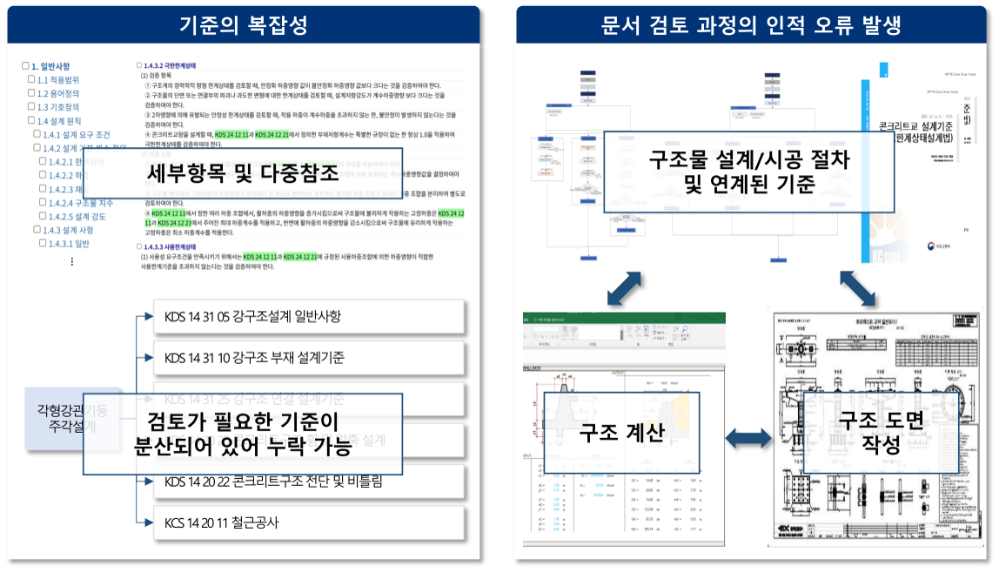
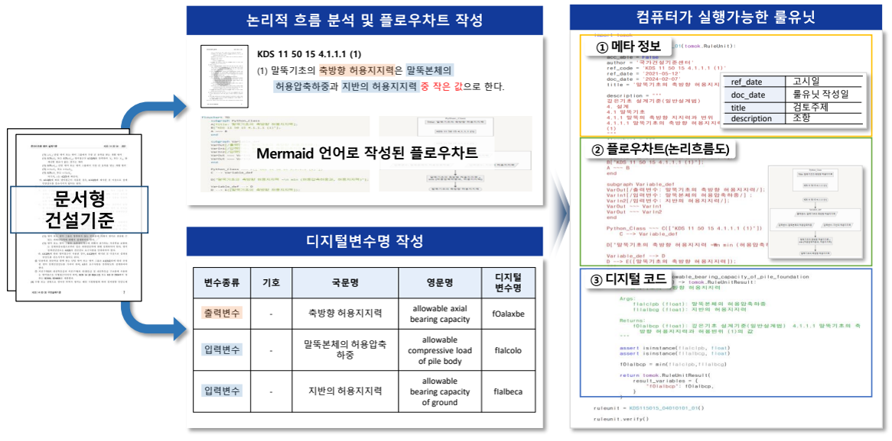

How Can AI Use Construction Standards Without Hallucinating?
Why reliable engineering AI begins with restructuring the knowledge, not with a better prompt
digital construction standards, construction standards, engineering AI, AI hallucination, large language models, LLM, machine-readable standards, machine-executable standards, automated compliance checking, automatic compliance check, ACC, BIM, RuleUnit, rule unit, engineering knowledge representation, knowledge graph, ontology, engineering knowledge structure, digital transformation
Generative AI can read an enormous amount of text. But an engineering standard is not merely text.
A design provision has a place in a hierarchy. It may depend on definitions in another document, refer to several other clauses, require particular input variables, prescribe a sequence of calculations, and finally lead to an engineering judgment. If those relationships are not explicit, an AI system must reconstruct them from prose every time it answers a question.
That is a dangerous way to use AI in engineering.
The more useful question is therefore not simply:
How can we make an AI read construction standards?
It is:
How can we restructure construction standards so that both engineers and AI can use the same authoritative engineering knowledge reliably?
This question is at the center of our ongoing work on digital construction standards.
Why is a construction standard difficult even before AI enters the problem?
Engineers already know the difficulty.
A single design task may require provisions distributed across several design standards, construction specifications, referenced clauses, calculations, and drawings. The engineer must understand not only each individual provision but also the relationships among them.

Figure 1 illustrates two related problems.
On the left, relevant requirements are distributed among many clauses and documents. Missing one reference can mean missing part of the engineering requirement.
On the right, design and construction are themselves connected processes. Standards, structural calculations, and drawings are not independent documents. An experienced engineer mentally constructs the relationships among them.
This means that conventional construction standards have a knowledge-structure problem.
A human expert can often reconstruct that structure through experience. A computer cannot safely be expected to infer all of it from unstructured documents.
Why is giving the documents to an LLM not enough?
A large language model is extremely good at interpreting language. That does not make the underlying standard machine-executable.
Suppose a provision says that an allowable value is the smaller of two calculated quantities. A language model may explain the sentence correctly. But an engineering system needs more than an explanation. It needs to know explicitly:
- what the two input quantities are,
- how they are defined,
- their units and engineering meaning,
- which quantity is the output,
- what comparison must be executed,
- where the authoritative provision came from, and
- how the result can be verified.
The problem becomes more difficult when a design check requires a chain of provisions distributed across several standards.
This is why prompt engineering alone cannot solve the fundamental problem.
If the engineering knowledge remains implicit in documents, the AI must repeatedly reconstruct the logic.
Our approach is to make that logic explicit first.
From documents to digital construction standards
The digitalization process begins by connecting engineering practice to the standards that govern it.

The architecture in Figure 2 has three broad layers.
First, a design/construction practice map describes actual engineering procedures and identifies the standards associated with each step.
Second, the information is organized into a digital construction-standard database, including library and ontology structures.
Third, the structured information supports applications in actual engineering workflows.
The important transition is therefore not
\[ \text{paper document} \rightarrow \text{PDF}, \]
but rather
\[ \text{document} \rightarrow \text{structured engineering knowledge} \rightarrow \text{machine-usable logic}. \]
A PDF is digital in storage format. It is not necessarily digital in knowledge structure.
The rule unit: where prose becomes engineering logic
The most important technical element is the rule unit.
A rule unit takes a provision written for human readers and represents its engineering logic explicitly.

Consider the example in Figure 3. The written provision specifies an allowable axial bearing capacity in relation to the allowable compressive load of the pile body and the allowable bearing capacity of the ground.
For a human engineer, the logical operation may appear obvious.
For a machine, it should not remain implicit.
The rule unit separates the information into components such as:
- metadata — where the requirement came from and what it concerns;
- logical flow — the sequence of decisions or calculations;
- digital variables — standardized representations of engineering quantities; and
- digital code — an executable implementation of the rule.
This changes the role of AI.
Instead of asking the AI to invent or reconstruct the calculation logic from prose, the system can direct it toward an authoritative, structured representation of that logic.
That distinction is fundamental.
Do not ask AI to reconstruct engineering logic from documents every time. Encode the logic once, then let AI access it reliably.
What does this have to do with hallucination?
The word hallucination is often treated as if it were purely a language-model problem.
In engineering applications, part of the problem is also an information-architecture problem.
If an AI system receives a large collection of loosely connected documents, it must determine which clauses are relevant, resolve references, infer relationships, distinguish definitions from requirements, and reconstruct calculation procedures.
Every implicit relationship creates another opportunity for an unsupported inference.
Structuring the standards changes the task.
Instead of asking:
“What do you think the standard requires?”
we can move toward:
“Retrieve the applicable authoritative rule, its dependencies, variables, and execution logic, and explain the resulting engineering check.”
This does not justify claiming that every possible AI response can be guaranteed to have zero hallucination. That would require a clearly defined validation framework and comprehensive testing.
But it changes the engineering problem in the right direction: reduce what the AI is allowed or required to infer, and increase what is supplied as explicit authoritative knowledge.
Digital standards are also reusable engineering knowledge
The same idea extends beyond formal code checking.
Traditional engineering example books contain valuable knowledge: representative design cases, calculation procedures, explanations, applicable standards, and verified results. But a printed example fixes the input values and calculation sequence on the page.
Those examples can also be restructured.
Figure 5 illustrates three steps:
\[ \text{structure} \rightarrow \text{model} \rightarrow \text{use}. \]
The engineering example first becomes structured data. Its fixed calculations are then transformed into models that can accept different input values. Finally, the knowledge can be reused in education, practical checking, collaboration, and AI-assisted engineering.
This suggests a broader interpretation of digitalization.
Digital transformation is not the conversion of paper into files. It is the conversion of engineering knowledge into reusable computational assets.
What changes in the AI era?
Before modern AI, digital construction standards were already useful for BIM integration, automated checking, databases, and software interoperability.
AI makes the need more urgent.
A language model provides a remarkably flexible interface between humans and information. An engineer can ask a question in ordinary language rather than navigating a rigid database structure.
But flexibility at the interface should not mean ambiguity in the engineering knowledge underneath it.
The combination we are seeking is therefore:
\[ \boxed{ \text{Natural-language flexibility} + \text{structured authoritative knowledge} + \text{executable engineering logic} } \]
The LLM can help interpret the engineer’s intent and explain the result.
The digital standard should provide the authoritative engineering basis.
The executable rule should perform calculations and checks that should not depend on probabilistic language generation.
This separation of roles is important.
AI transformation begins before the AI
It is tempting to think of AI transformation as adding an AI layer to an existing engineering process.
For standards, that reverses the order of the problem.
If the underlying information is fragmented, inconsistent in representation, and dependent on implicit human interpretation, adding a powerful language model does not automatically make the system reliable.
The knowledge infrastructure has to change as well.
This is why digital construction standards are particularly important in the AI era. They provide a way to connect conventional engineering documents with BIM, computational checking, databases, ontology, executable rules, and natural-language AI interfaces.
The broader lesson extends beyond construction standards.
AI reliability in engineering depends not only on the intelligence of the model, but on the structure and authority of the engineering information supplied to it.
Or, more compactly:
Structure the engineering knowledge before asking AI to reason with it.
Where this work is heading
The work described here is part of an ongoing research and development effort on digital construction standards and AI-enabled engineering applications.
The framework can support several directions: design and construction standard maps, construction-standard libraries and ontologies, executable rule units, BIM-based automatic compliance checking, automated generation of project specifications, field applications, and digital engineering example books.
The long-term objective is not a construction-standard chatbot.
It is an engineering information environment in which human-readable standards and machine-usable standards coexist, with both referring to the same authoritative engineering requirements.
That is a much more demanding problem than document search.
It is also a much more useful foundation for engineering AI.
Project status
This article describes concepts and technologies from an ongoing R&D project. It is intended to explain the engineering framework and motivation rather than to report a completed peer-reviewed research study. Specific performance claims should therefore be interpreted only where they have been separately defined and validated.
Project material
Digital Construction Standards and AI-Based Application Technologies
Presentation material, Structural Engineering & Mechanics Laboratory, Korea University, June 26, 2026.